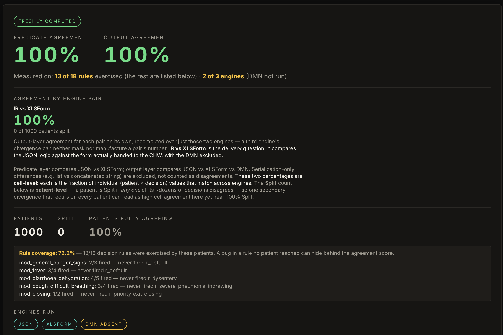
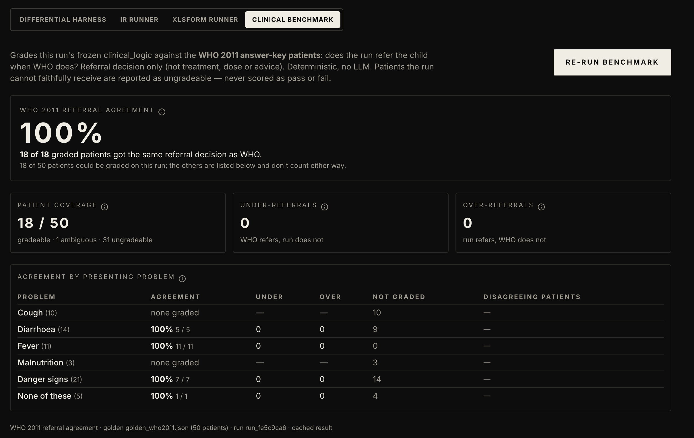
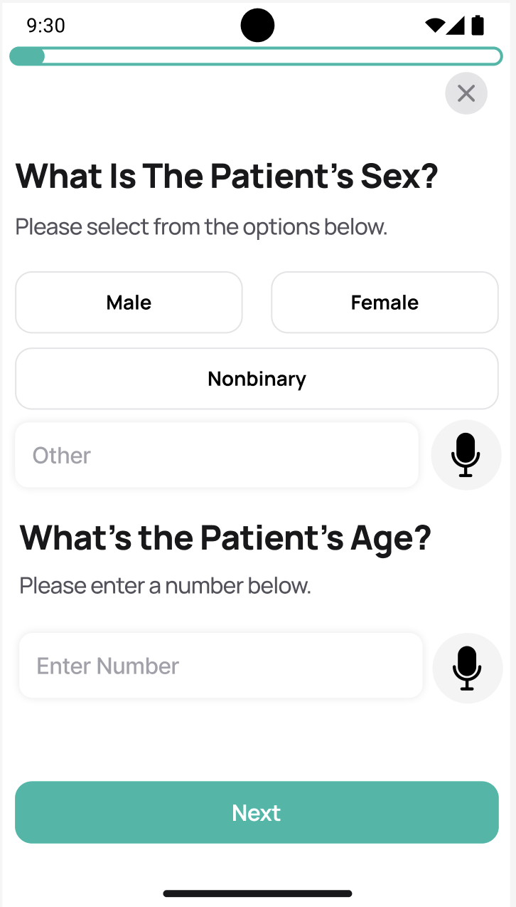
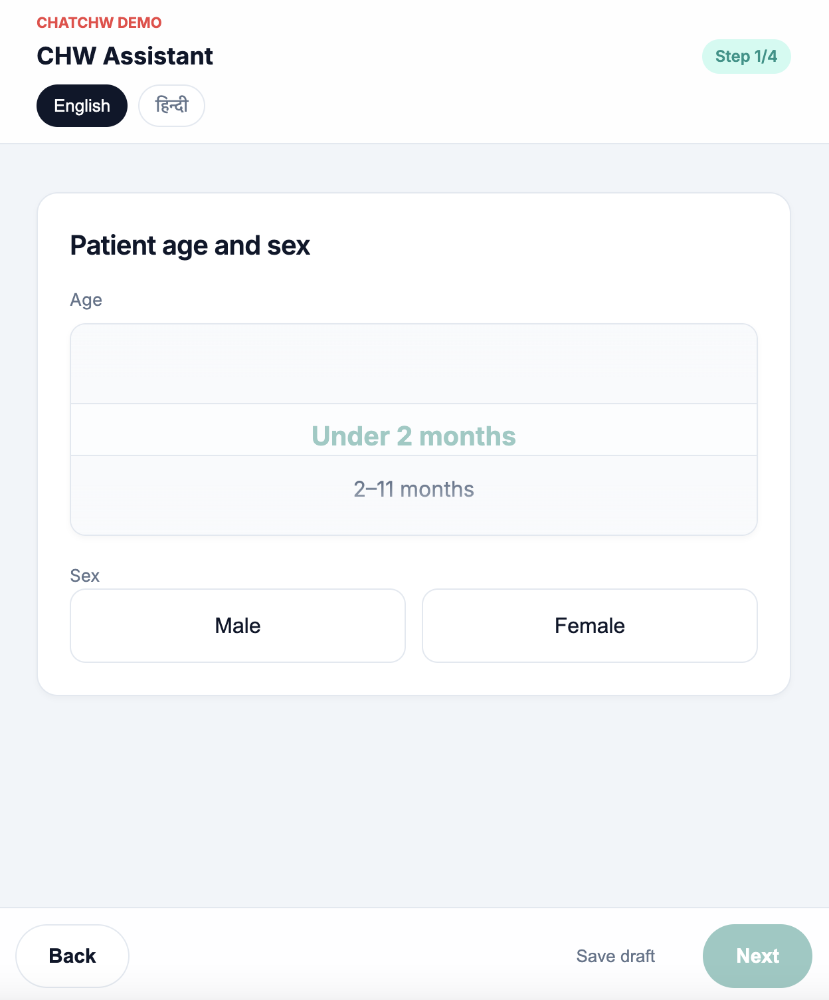

Case Study · AI Evaluation / Healthcare
ChatCHW
Building Reliable Clinical Decision Support
Led the validation of an AI-assisted clinical decision-support system, developing cross-engine testing and evaluation methods to uncover hidden logic failures across 1,000+ simulated patient cases.
Project Team Lead · UC Berkeley Haas School of Business
The Challenge
Reliable clinical guidance requires more than agreement among generated decision systems. Community health workers need dependable support at the point of care — but consistency across JSON, DMN, and XLSForm implementations can mask untested rules, converter defects, and misleading performance scores.
The work centered on building evaluation methods that make those failures visible before logic reaches the field.

My Role
Project Team Lead at UC Berkeley Haas. I led validation strategy and coordinated two intern workstreams focused on simulation, testing, and evaluation infrastructure.

What I Built
- Cross-engine testing across JSON, DMN, and XLSForm representations
- Simulated patient evaluation across 1,000+ cases
- Defect investigation for converter and evaluator failures
- Reproducible regression testing workflows
- Transparent reporting metrics, including rule coverage alongside agreement

The Key Decision
We distinguished apparent agreement from meaningful comparisons and independently verified correctness. Engine-to-engine consistency is a reliability signal — not proof that the underlying clinical logic is right.
That framing exposed misleading performance metrics: high agreement can coexist with unexercised rules, ungradeable patients, and defects that only appear under structured evaluation.
This case study does not claim the system is clinically validated or that independent clinical accuracy has been established. An authoritative clinical oracle remains necessary for that determination.
Results and Impact
Interface prototypes
Complementary product artifacts for community health worker intake flows:

